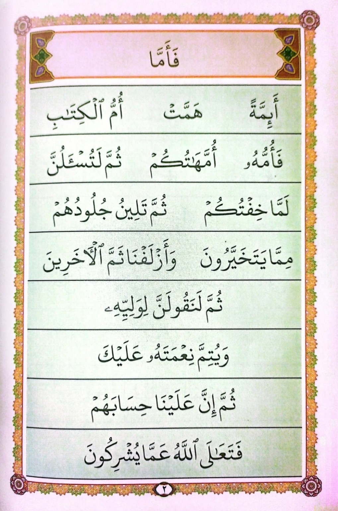
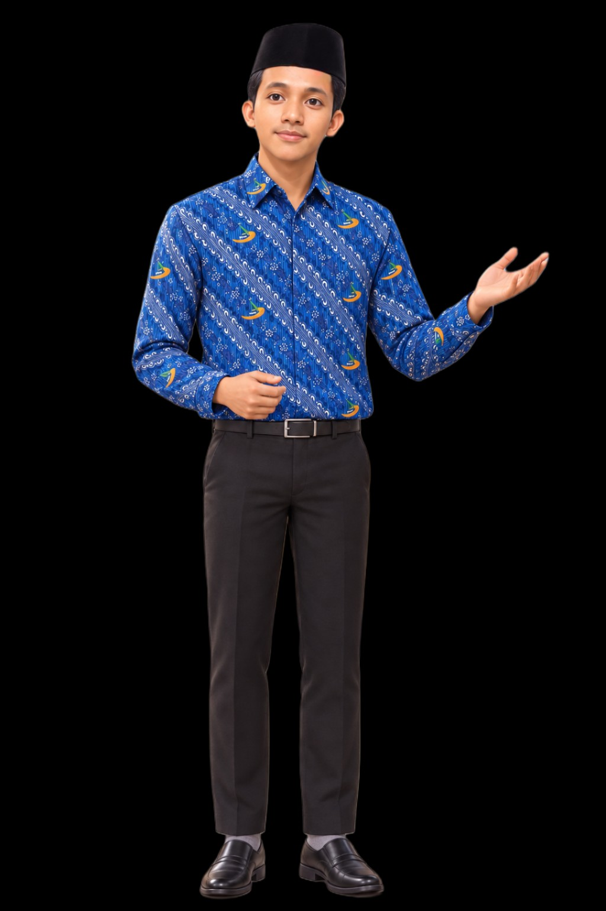

Selamat belajar!


Ustad sedang berbicara
Menyiapkan pembelajaran...


Yuk belajar Tahsin Al-Qur'an bersama. Masukkan nama lengkapmu untuk memulai.
Placeholder Tahap 5.
Mekanisme perekaman dan pengiriman audio siswa
akan dikembangkan berikutnya.